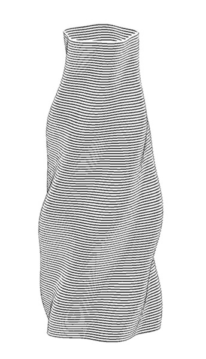

Diseño y desarrollo de productos digitales e interfaces para sistemas complejos, integrando visualización de datos, diseño computacional y tecnología de código abierto.

Dominga Generativa
Diseño y simulación de geometrías para impresión FDM (Fused Deposition Modeling)